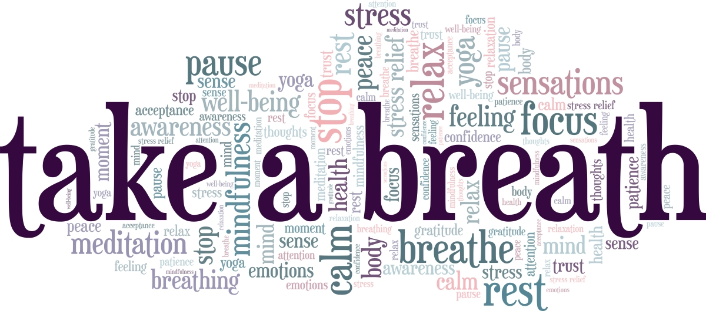

How to integrate mindfulness
into
your life-style.
Research indicates
that a vast majority
of our behavior is
influenced by automatic thinking.
When we think we are
doing something new,
our brain is
actually defaulting
to old habits.
These default brain
signals are so
efficient that they
often cause us to
relapse into old
behaviors before we
remember what we
were meant to do.
It’s unfortunate
because these
thoughts can be
extremely
detrimental for
one’s health and
wellness, but
luckily, there is a
way of stopping them
in their tracks.
The more chances we
get to activate the
intentional brain
the better. Putting meditation reminders
around you and in
your living
environment remind
you to be present.
Refreshing your
reminders regularly
helps to create new
connections in the
brain. This will
help you to create
new thinking
patterns which help
to boost creativity
and problem solving.
If you really want
to quiet your mind
and be more creative
the next time you’re
trying to come up
with a solution for
your work-related
problem, try using
mindfulness as an
aid.
By putting reminders
around yourself
(such as on a desk,
in the kitchen, or
on your phone
screen), it will
make it much easier
to make mindfulness
a regular habit.
Key points:
-
Habits are created
through repetition:
The more you do
something the better
you get at doing it.
The aim is to
ingrain the process
of mindfulness into
your psyche so that
it becomes second
nature. Regardless
of where you are
situated you will
always be able to
remain present and
live a more
fulfilling life.
-
Reminders never go
astray:
It is beneficial to be
reminded of
mindfulness
throughout the day
and even during your
sleep. We are only
human and it is very
easy to forget about
the little things as
we go about our
daily activities.
More importantly, we
should remember how
easy it is to enter
into a state of
automatic thinking.
The purpose of
mindfulness
meditation is to break the cycle
to be present for a
better quality of
life.
-
Mindfulness meditation boosts creativity and problem solving:
By learning to be present, we learn to be more aware of what is happening with regard to our thought processes.
By allowing the mind to be still, we open our self up to receive external information from our surroundings. With the release of new solutions, we are able to come up with more creative and helpful ways to solve problems.